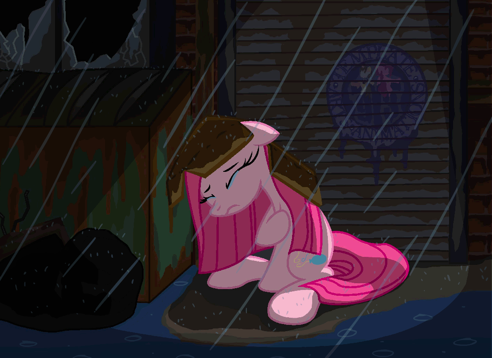
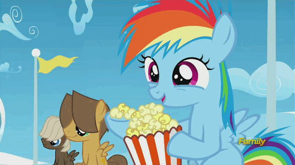
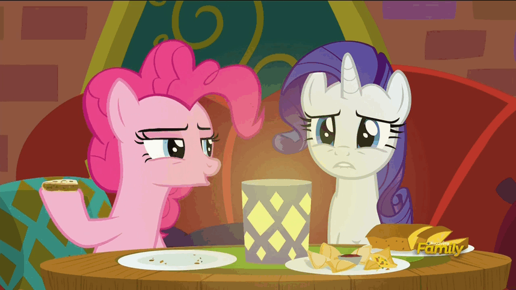
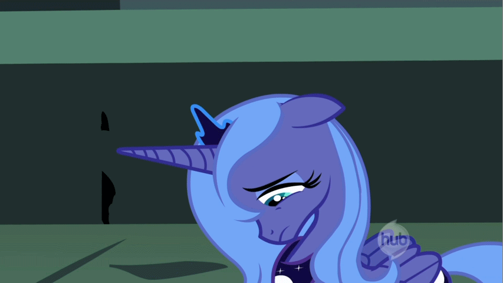
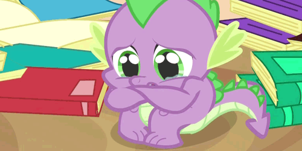

My head hurts. I just ate out with my family to celebrate my sister's, my own, and my aunt’s birthdays. I knew I was hungry. I haven't eaten since this morning, but I didn't feel that way.
I ate at dinner. I didn't eat as much as I usually do. I was sick in my stomach, and I got even sicker after eating the second soup dumpling.
After he broke up with me, I didn't feel hungry when lunch came around. And I still don’t.

I was sitting in the restaurant surrounded by my unknowing family, thinking about what I wanted to say to him. I forbade myself from going on my phone so that I would get my thoughts straight. I wanted to make sure he knew how much he hurt me. I wanted to tell him how I felt used, that I never thought we would break up like we did, that he never loved me as much as I loved him, and how empty I am right now.
Yesterday was my birthday. I went out with the same friend who made it happen. We watched Crazy Rich Asians. When it came to the part when Nick proposed to Rachel on the airplane, I cried the tears I tried so hard to blink back from the wedding scene earlier. I believed I was lucky to know what love is.


We went to McDonald's after and ate McNuggets while I gushed about my boyfriend the whole time. My friend told me that she bought a blue hat for her boyfriend’s birthday. I realized that I had no idea what I would get mine.
And now it's a day later.

Now, I'm trying to get over it, like my friend told me to. It was going to happen eventually. Long distance usually doesn't work. If it's meant to be, it'll work it. If it isn't, then it won't.
I hate seeing that just yesterday, I was happy to be his girlfriend, and now it's over.
I don't know what to feel. I want to be with him again, and I want to move on to not hurt anymore. He didn't care enough to still be with me, but I feel the same as yesterday, lucky to know love.
I try to convince myself how he wronged me. He broke up with me so suddenly, and it seemed like he didn’t love me like I loved him. That's the problem. I loved him so much, and I still do, and I want to stop right now so I can move on, but I can't. Even if we got back together, it would never be the same, and it would probably happen again. It's so hard to let go.

After he broke up with me, I told him it wasn't over. I knew it wasn't over. It's been a few hours and I still do. I don't know about later. Right now, I still do.
I hope there's a tomorrow. I didn't intend for the headings to be yesterday and today, so the next one has to be tomorrow.